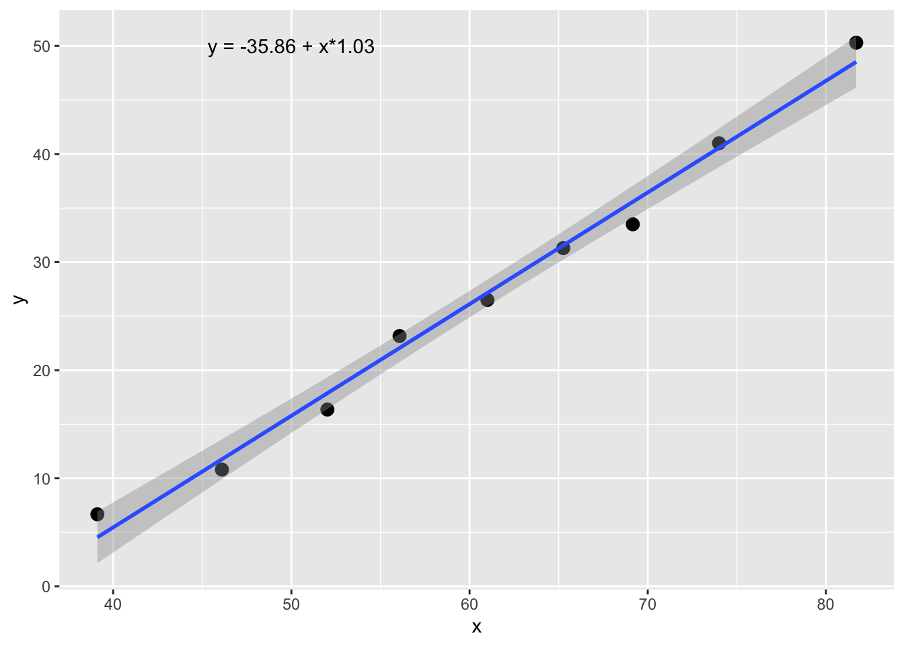
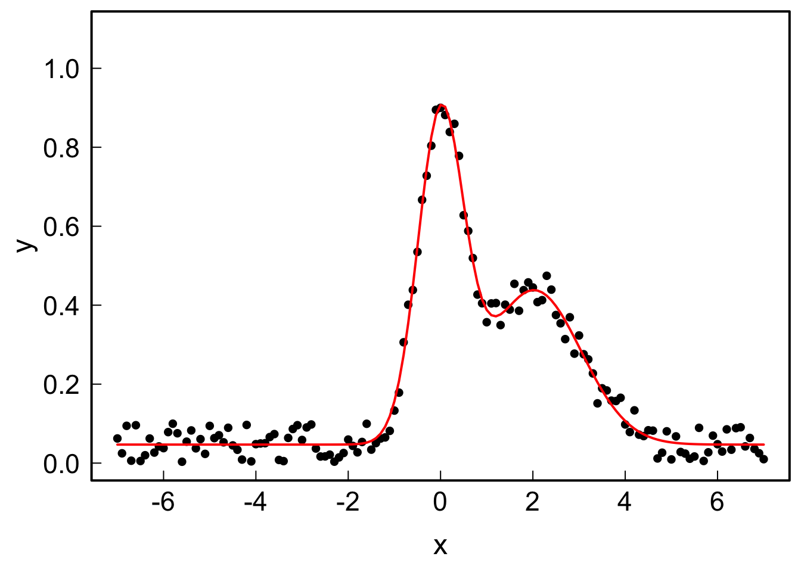
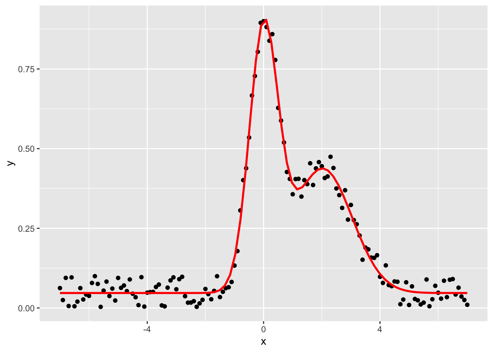
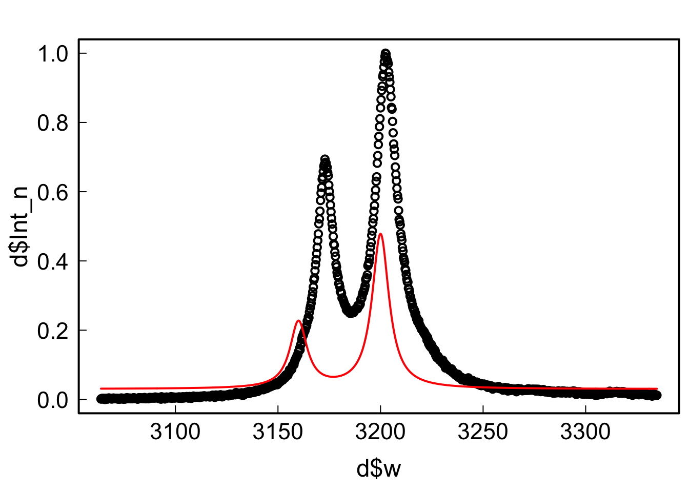
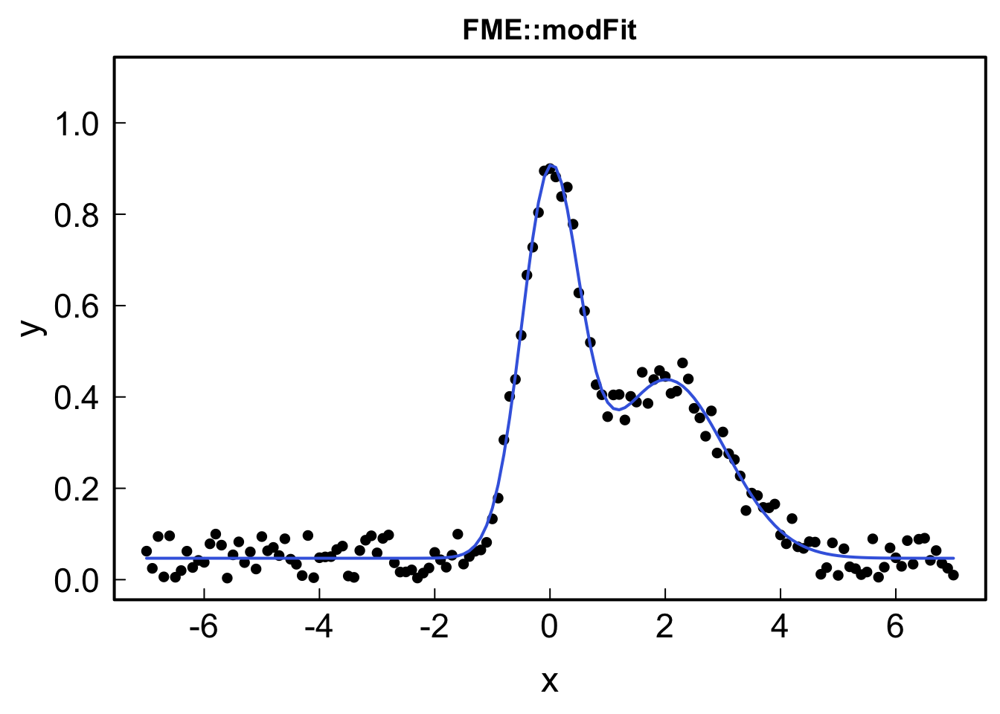

9 Fitting
9.1 Linear fitting
Let’s learn how to do simple fits with R and plot the results.
# Create some fake data
d <- read.table(header=TRUE,text="
x y
39.11 6.67
46.1 10.8
52.02 16.36
56.07 23.16
61.00 26.5
65.26 31.3
69.16 33.5
74.00 41.0
81.70 50.3
")
# Fit with a linear model
fit <- lm(y~x, data=d)
# Summary of the fit
summary(fit)##
## Call:
## lm(formula = y ~ x, data = d)
##
## Residuals:
## Min 1Q Median 3Q Max
## -2.0747 -0.9575 -0.2466 1.1052 2.1321
##
## Coefficients:
## Estimate Std. Error t value Pr(>|t|)
## (Intercept) -35.85628 2.50588 -14.31 1.94e-06 ***
## x 1.03284 0.04052 25.49 3.65e-08 ***
## ---
## Signif. codes: 0 '***' 0.001 '**' 0.01 '*' 0.05 '.' 0.1 ' ' 1
##
## Residual standard error: 1.562 on 7 degrees of freedom
## Multiple R-squared: 0.9893, Adjusted R-squared: 0.9878
## F-statistic: 649.7 on 1 and 7 DF, p-value: 3.655e-08attributes(fit)## $names
## [1] "coefficients" "residuals" "effects" "rank"
## [5] "fitted.values" "assign" "qr" "df.residual"
## [9] "xlevels" "call" "terms" "model"
##
## $class
## [1] "lm"# Retrieve the coefficients and errors
coef(fit); coef(fit)[1]; coef(fit)['(Intercept)']## (Intercept) x
## -35.856284 1.032836## (Intercept)
## -35.85628## (Intercept)
## -35.85628summary(fit)$coefficients; summary(fit)$coefficients["x","Std. Error"]## Estimate Std. Error t value Pr(>|t|)
## (Intercept) -35.856284 2.50587890 -14.30887 1.936873e-06
## x 1.032836 0.04052143 25.48863 3.654832e-08## [1] 0.04052143# Plotting the points and the fit
par(cex.lab=1.5, cex.axis=1.4, mgp = c(2.4, .5, 0),
tck=0.02, mar=c(4, 4, .5, .5), lwd=2, las=1)
plot(d, pch=16)
abline(coef(fit), col="red")
to_print <- paste("y = ", round(coef(fit)[1],2)," + x*",
round(coef(fit)[2],2), sep="")
text(50, 50, to_print)
ggplot(data=d, aes(x,y)) +
geom_point(cex=3) +
geom_smooth(method="lm") +
annotate("text", x = 50, y = 50, label = to_print)
The function geom_smooth() will fit the data and display the fitted line, but to retrieve the actual coefficients you still need to run lm().
9.2 Non linear fitting
You can fit data with your own functions and constraints using nsl. Example:
9.2.1 Base R
# Create fake data
x <- seq(-7,7,.1)
y <- dnorm(x, sd = .5) + dnorm(x, mean=2, sd = 1) + runif(length(x))/10
df <- data.frame(x=x,y=y)
# Create a function to fit the data
myfunc <- function(x, y0, x0, A, B) {
y0 + dnorm(x, sd=A) + dnorm(x, mean=x0, sd=B)
}
# Fit the data using a user function
fit <- nls(y ~ myfunc(x, y0, x0, A, B),
data=df,
start=list(y0=0, x0=1.5, A=.2, B=.2) # provide starting point
)
summary(fit)##
## Formula: y ~ myfunc(x, y0, x0, A, B)
##
## Parameters:
## Estimate Std. Error t value Pr(>|t|)
## y0 0.046899 0.002477 18.93 <2e-16 ***
## x0 2.023957 0.025517 79.32 <2e-16 ***
## A 0.495029 0.007224 68.53 <2e-16 ***
## B 1.019904 0.021360 47.75 <2e-16 ***
## ---
## Signif. codes: 0 '***' 0.001 '**' 0.01 '*' 0.05 '.' 0.1 ' ' 1
##
## Residual standard error: 0.02942 on 137 degrees of freedom
##
## Number of iterations to convergence: 8
## Achieved convergence tolerance: 3.397e-07x0 <- coef(fit)["x0"]; y0 <- coef(fit)["y0"]
A <- coef(fit)["A"]; B <- coef(fit)["B"]
# Plotting the resulting function in red
par(cex.lab=1.5, cex.axis=1.4, mgp = c(2.4, .5, 0),
tck=0.02, mar=c(4, 4, .5, .5), lwd=2, las=1)
plot(x, y, pch=16, ylim=c(0,1.1))
lines(x, myfunc(x, y0, x0, A, B), col="red", lwd=2)
Or with ggplot2:
ggplot(data=df, aes(x,y))+
geom_point() +
geom_smooth(method = "nls",
method.args = list(formula = y ~ myfunc(x, y0, x0, A, B),
start=list(y0=0, x0=1.5, A=.2, B=.2)
),
data = df,
se = FALSE,
color="red")
In nls it is even possible to constraint the fitting by adding lower and upper boundaries. You have to be careful with these and not provide stupid ones, e.g.:
# Constraining the upper and lower values of the fitting parameters
fit2 <- nls(y~ myfunc(x, y0, x0, A, B),
start=list(y0=0, x0=5, A=.2, B=.2),
upper=list(y0=Inf, x0=Inf, A=.4, B=1),
lower=list(y0=-Inf, x0=4, A=-Inf, B=-Inf),
algorithm = "port"
)
x0 <- coef(fit2)["x0"]; y0 <- coef(fit2)["y0"]
A <- coef(fit2)["A"]; B <- coef(fit2)["B"]
# Plotting the resulting function in blue
par(cex.lab=1.5, cex.axis=1.4, mgp = c(2.4, .5, 0),
tck=0.02, mar=c(4, 4, 2, .5), lwd=2, las=1)
plot(x, y, pch=16, ylim=c(0,1.1), main="Beware of constraints")
lines(x, myfunc(x, y0, x0, A, B), col="royalblue", lwd=2)
9.2.2 FME
Some times though, whatever the initial conditions of the fit you use, you will get the error message Error in nlsModel(formula, mf, start, wts) : singular gradient matrix at initial parameter estimates. If playing around with the initial parameters does not solve this problem, a more robust fitting method is needed. A good one is modFit() from the package FME, that also accepts constraints.
With modFit, the algorithm minimizes the residual of the observed data minus the model, so the syntax is slightly different:
library(FME)## Loading required package: deSolve## Loading required package: rootSolve## Loading required package: codamyfunc <- function(x, params) {
parms <- as.list(params)
parms$y0 + dnorm(x, sd=parms$A) + dnorm(x, mean=parms$x0, sd=parms$B)
}
params <- c(y0=0, x0=5, A=.2, B=.2) # initial guess
ModCost <- function(P) {
return(y - myfunc(x, P)) # residuals
}
fit <- modFit(f = ModCost, p = params)
summary(fit)##
## Parameters:
## Estimate Std. Error t value Pr(>|t|)
## y0 0.046899 0.002477 18.93 <2e-16 ***
## x0 2.023957 0.025517 79.32 <2e-16 ***
## A 0.495029 0.007224 68.53 <2e-16 ***
## B 1.019905 0.021360 47.75 <2e-16 ***
## ---
## Signif. codes: 0 '***' 0.001 '**' 0.01 '*' 0.05 '.' 0.1 ' ' 1
##
## Residual standard error: 0.02942 on 137 degrees of freedom
##
## Parameter correlation:
## y0 x0 A B
## y0 1.000e+00 1.526e-06 1.398e-06 6.236e-06
## x0 1.526e-06 1.000e+00 1.729e-02 3.823e-03
## A 1.398e-06 1.729e-02 1.000e+00 2.211e-01
## B 6.236e-06 3.823e-03 2.211e-01 1.000e+00par(cex.lab=1.5, cex.axis=1.4, mgp = c(2.4, .5, 0),
tck=0.02, mar=c(4, 4, 2, .5), lwd=2, las=1)
plot(x, y, pch=16, ylim=c(0,1.1), main="FME::modFit")
lines(x, myfunc(x,fit$par), col="royalblue", lwd=2)
9.3 Exercises
Exercise 1
- Load exo_fit.txt in a
data.frame. - Using
lmornlsfit each column as a function ofxand display the “experimental” data and the fit on the same graph.- Tip: Take a look at the function
dnormto define a Gaussian
- Tip: Take a look at the function
Exercise 2: application to real data
- Load the Raman spectrum rubis_01.txt, normalize it to [0,1] and plot it
- Define the Lorentzian function
- Create a function that is the sum of 2 Lorentzians
- Guess grossly the initial parameters and plot the resulting curve
- Fit the data by a sum of 2 Lorentzians using
nls- Try playing with the starting parameters to get rid of the error
- Define a function returning the sum of Lorentzians taking the parameters as a vector,
sumLor(x, params). - Define the
ModCostfunction returning the residuals of the fit - Use the same initial parameters as before and plot the initial guessed curve
- Fit the data using
FME::modFit() - What happens with the
y0parameter? use a constraint to keep the parameters plausible - Plot the resulting fit
Solution
# Load rubis_1.txt, normalize it to [0,1] and plot it
d <- read.table("Data/rubis_01.txt", header=FALSE, col.names=c("w", "Int"))
norm01 <- function(x) {(x-min(x))/(max(x)-min(x))}
d$Int_n <- norm01(d$Int)
par(cex.lab=1.5, cex.axis=1.4, mgp = c(2.4, .5, 0),
tck=0.02, mar=c(4, 4, 2, .5), lwd=2, las=1)
plot(d$w, d$Int_n)
# Define the Lorentzian function
Lorentzian <- function(x,x0=0,FWHM=1,A=1,y0=0){
y0 + 2*A/(pi*FWHM)/( 1 + ((x-x0)/(FWHM/2))^2 )
}
# Create a function that is the sum of 2 Lorentzians
Lor2 <- function(x,x1,FWHM1,A1,y1,x2,FWHM2,A2,y2){
Lorentzian(x,x0=x1,FWHM=FWHM1,A=A1,y0=y1) +
Lorentzian(x,x0=x2,FWHM=FWHM2,A=A2,y0=y2)
}
# Guess grossly the initial parameters and plot the resulting curve
plot(d$w, d$Int_n)
lines(d$w,Lor2(d$w,x1=3160, FWHM1=10, A1=3, y1=0.03,
x2=3200, FWHM2=10, A2=7, y2=0), col="red")
# Fit the data by a sum of 2 Lorentzians using `nls`
fit <- nls(data=d, Int_n ~ Lor2(w,x1,FWHM1,A1,y1,x2,FWHM2,A2,y2),
start=list(x1=3160, FWHM1=10, A1=3, y1=0.03,
x2=3200, FWHM2=10, A2=7, y2=0)
)## Error in nlsModel(formula, mf, start, wts): singular gradient matrix at initial parameter estimates# This doesn't work... we need to use a more robust fitting method
# Define a function returning the sum of two Lorentzians
# taking the parameters as a vector, `sumLor(x, params)`
sumLor <- function(x,params){
# sum of Lorentzian functions
y0 <- as.numeric(params[grep("y0",names(params))])
A <- as.numeric(params[grep("A",names(params))])
x0 <- as.numeric(params[grep("x0",names(params))])
FWHM <- as.numeric(params[grep("FWHM",names(params))])
if(length(x0)!=length(FWHM)) FWHM <- rep(FWHM, length.out=length(x0))
if(length(x0)!=length(A)) A <- rep(A, length.out=length(x0))
if(length(x0)!=length(y0)) y0 <- rep(y0, length.out=length(x0))
rowSums(sapply(1:length(x0), function(i) {
y0[i] + 2*A[i]/(pi*FWHM[i])/( 1 + ((x-x0[i])/(FWHM[i]/2))^2 )
}))
}
# Define the `ModCost` function returning the residuals of the fit
ModCost <- function(P) {d$Int_n - sumLor(d$w, P)}
# Use the same initial parameters as before and plot the initial guessed curve
params <- c(x0=c(3160, 3200),
FWHM=c(10,10),
A=c(3,7),
y0=c(0.01,0.01))
par(cex.lab=1.5, cex.axis=1.4, mgp = c(2.4, .5, 0),
tck=0.02, mar=c(4, 4, 2, .5), lwd=2, las=1)
plot(d$w, d$Int_n, pch=16, col=adjustcolor("black", alpha=.5), cex=1)
lines(d$w, sumLor(d$w, params), col="blue")
# Fit the data using `FME::modFit()`
# What happens on the `y0` parameter? use a constraint to keep the parameters plausible
library(FME)
fit <- modFit(f=ModCost, p=params, lower=c(x0=c(0,0), A=c(0,0), FWHM=c(0,0),y0=c(0,0)))
# Plot the resulting fit
lines(d$w, sumLor(d$w, coef(fit)), col="red")